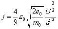

Checking units of measurement during runtime will inevitably slow down the execution time compared to the pure numerics, a waste (?) of execution time which may be prohibitive for some applications. This library enables using strict unit checking during the development phase (until unit test phase), and switching off the checks when releasing the project into the wild. Nevertheless, there will be residues of the checking in the code which slow down the execution time by a factor of around 10, see the relative timing below in the comparison of the Nude and the Optimized values in the Unchecked variant, which represent the truly important results.
So before you now delve into the measurement results because you are pondering the idea of unit checking, keep in mind that the results presented here are not representative. Do measure your project yourself!
If you feel this library inappropriate, think about trying Dmitry Kazakov's Units of Measurement for Ada or AdaCore's language extension (see chapter 6.5) of which I gave a (meanwhile outdated) assessment here: Physical units with GNAT (I do not know if there has been any progress, I have never used it myself – but note: This is not Ada standard and probably never will be).
Measurements of relative speeds were performed with GNAT CE 2021 on Windows 8.1 with an old and slow machine and on Windows 11 with a brandnew fast machine.
The Schottky Langmuir equation is used for execution time measurements because it has rational exponents. Quaternions may be used similarly to matrices for coordinate transformations but need much more time.
For details, see the program measure.adb in
directory Examples.
Loops are used with one million repetitions.
Assertion Effect
Schottky Langmuir
Matrices and Quaternions
Before the measurements are discussed, a strange effect has to be discussed. We are interested in the speed of the checked and unchecked versions in comparison with the pure mathematics, i. e. the time consumed for the nude Schottky Langmuir equation with only floating point data.
This nude equation is compiled twice, once with Assertion Policy
set to Ignore and once set to Check.
Although the code is identical and there are no assertions, the
execution time different by an astonishing big factor.
This difference must be attributed to the executable produced by GNAT
depending on the switch -gnata, which corresponds to the
Assertion_Policy pragma.
| Assertion | Absolute | Relative |
|---|---|---|
| Ignore | 0.015771666 s | 1.00 |
| Check | 0.109398771 s | 6.94 |
| Assertion | Absolute | Relative |
|---|---|---|
| Ignore | 0.002838900 s | 1.00 |
| Check | 0.018112100 s | 6.38 |
In the measurements below, please take into account the distortion.
The Schottky Langmuir equation

In contrast, the dressed version is correctly dimensioned and called with parameters dimensioned with unit strings. Unit string evaluation is time consuming and heavily depends on the complexity of the string. However, unit strings are generally only used for initialization and do not normally occur in formulas. Thus in the stringless version, the parameter unit initialization is taken out of the loop.
Last, the optimized version also precompiles the constant part outside the loop. This is what an optimizing compiler will do (in the nude version), but cannot here because of the dimension components.
These four versions are computed once with unit checking enabled and once disabled. The results are quite astonishing. (Of course the absolute values depend on the speed of the machine in use; important are the relative speed values only.)
| Unchecked | Absolute | Relative | ||
|---|---|---|---|---|
| Nude | 0.015771666 s | 1.0 | ||
| Optimized | 0.167998892 s | 10.7 | 1.0 | |
| Stringless | 0.215526095 s | 13.7 | 1.3 | 1.0 |
| Dressed | 0.668961375 s | 42.4 | 4.0 | 3.1 |
| Checked | Absolute | Relative | ||
|---|---|---|---|---|
| Nude | 0.109398771 s | 1.0 | ||
| Optimized | 5.908864053 s | 54.0 | 1.0 | |
| Stringless | 6.994078595 s | 63.9 | 1.2 | 1.0 |
| Dressed | 8.570521621 s | 78.3 | 1.5 | 1.2 |
| Unchecked | Absolute | Relative | ||
|---|---|---|---|---|
| Nude | 0.002838900 s | 1.0 | ||
| Optimized | 0.035072600 s | 12.4 | 1.0 | |
| Stringless | 0.043505100 s | 15.3 | 1.2 | 1.0 |
| Dressed | 0.141652300 s | 49.9 | 4.0 | 3.3 |
| Checked | Absolute | Relative | ||
|---|---|---|---|---|
| Nude | 0.018112100 s | 1.0 | ||
| Optimized | 0.869659000 s | 48.0 | 1.0 | |
| Stringless | 1.017735200 s | 56.2 | 1.2 | 1.0 |
| Dressed | 1.251099400 s | 69.1 | 1.4 | 1.2 |
Comparing the nude and the
optimized versions in the checked variant,
you can see that the dimension calculation makes the execution
time explode.
This melts down when checking is off.
These figures are in effect the most
interesting ones.
The rest must be attributed to the compiler ignoring the
Inline pragma for the operations in the dimension
signature package.
Comparing the stringless and the dressed execution times, you can see that the dimension string evaluation is extremely expensive in the unchecked version, thus be careful to only use them for data initilization and avoid them in calculations. In the checked version, this effect is smaller since the computation of the dimension components consumes most of the time, whereas in the unchecked version, only the dimension string evaluation is left.
| Nude | Optimized | Stringless | Dressed | |||||
|---|---|---|---|---|---|---|---|---|
| Unchecked | 0.015771666 s | 1.00 | 0.167998892 s | 1.00 | 0.215526095 s | 1.00 | 0.668961375 s | 1.00 |
| Checked | 0.109398771 s | 6.94 | 5.908864053 s | 35.17 | 6.994078595 s | 32.45 | 8.570521621 s | 12.81 |
| Nude | Optimized | Stringless | Dressed | |||||
|---|---|---|---|---|---|---|---|---|
| Unchecked | 0.002838900 s | 1.00 | 0.035072600 s | 1.00 | 0.043505100 s | 1.00 | 0.141652300 s | 1.00 |
| Checked | 0.018112100 s | 6.38 | 0.869659000 s | 24.80 | 1.017735200 s | 23.39 | 1.251099400 s | 8.83 |
Last the unchecked versus checked equations. (The Nude column is the same as above.) You again can see the big effect of suppressing the dimension checking.
As expected, quaternion rotation is much slower to matrix rotation, and even more so in the checked version.
| Matrix | Quaternion | |||
|---|---|---|---|---|
| Unchecked | 0.110371887 s | 1.0 | 0.600734540 s | 1.0 |
| Checked | 0.274695246 s | 2.5 | 2.576114086 s | 4.3 |
| Unchecked | Checked | |||
|---|---|---|---|---|
| Matrix | 0.110371887 s | 1.0 | 0.274695246 s | 1.0 |
| Quaternion | 0.600734540 s | 5.4 | 2.576114086 s | 9.4 |
| Matrix | Quaternion | |||
|---|---|---|---|---|
| Unchecked | 0.023591300 s | 1.0 | 0.135526300 s | 1.0 |
| Checked | 0.054099800 s | 2.3 | 0.489615400 s | 3.6 |
| Unchecked | Checked | |||
|---|---|---|---|---|
| Matrix | 0.023591300 s | 1.0 | 0.054099800 s | 1.0 |
| Quaternion | 0.135526300 s | 5.7 | 0.489615400 s | 9.1 |